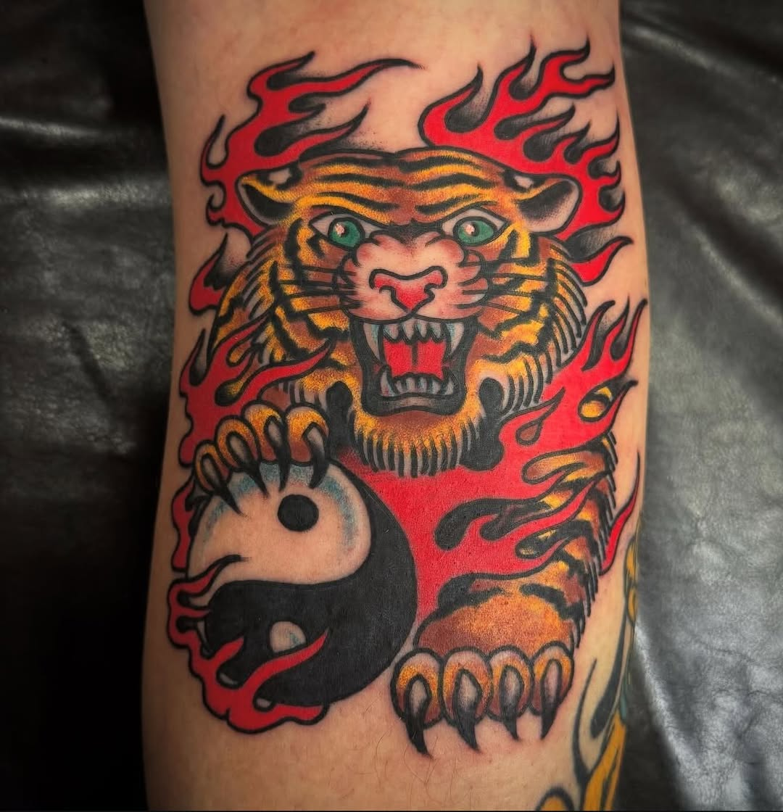
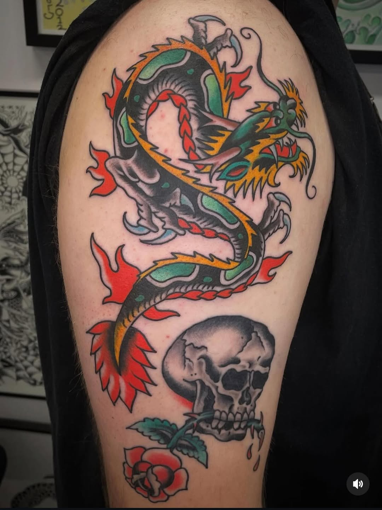
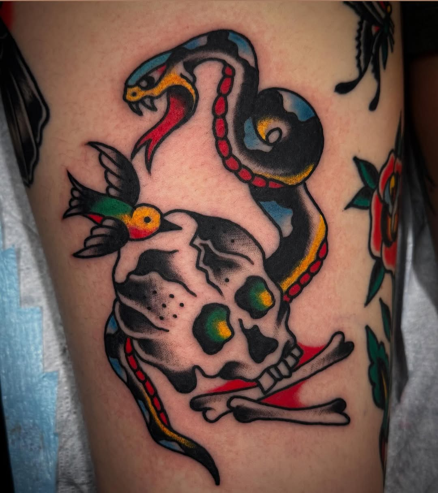
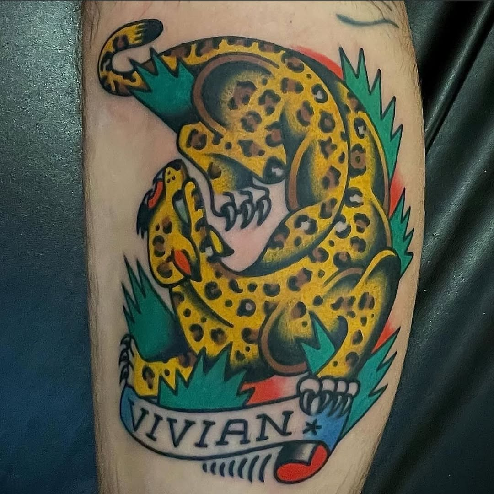

The listed domain now resolves to a stopped-site page, while the real shop activity is happening on Instagram and in the street-level business listings.

536 Pandora Ave · Victoria BC
Walk-ins welcome on Pandora.
Lucky Fortune Tattoo keeps the shop logic simple. Call the number, come into the shop, and pick from a wall of bold traditional work that already knows how to hold a room.
Proof without filler
The opportunity is clarity, not reinvention.
The Instagram bio leads with the address, phone number, and WALK-INS WELCOME. That should be above the fold, not buried.
GetInked’s review summary calls out the welcoming vibe, custom work, and specific artists, which is stronger proof than any vague brand story.
Selected from the feed
Classic flash, loud enough to sell itself.



How the page should frame the shop
Phone first. Questions second. Needles after that.
The current live signals are direct. The bio says please do not DM. The business listings keep repeating the same practical details. That tells you exactly what kind of site Lucky Fortune actually needs.
Less moodboarding, more utility. Show the work. Put the phone number where people can hit it. Make the walk-in message obvious. Let the shop sound like a shop.
Visit the shop
536 Pandora Ave
Victoria, BC
Tue to Sun
12:00 PM to 6:00 PM
Closed Monday
778 265 5825
Call, or come into the shop.
No DM-first flow.
Direct action
Call the shop, then go get tattooed.
This demo does not invent a softer funnel than the business actually wants. It just gives the shop a cleaner front door than a dead homepage.